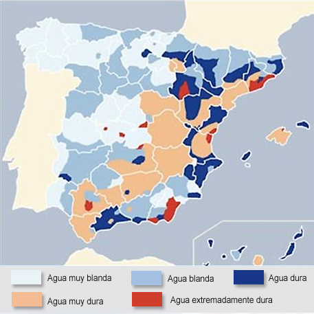

La Dureza del agua es la concentración de compuestos minerales que hay en una determinada cantidad de agua, en referencia a las sales de magnesio y el calcio que lleva. Son éstas las causantes de la dureza del agua, y el grado de dureza es directamente proporcional a la concentración de sales alcalinas.
La Dureza total (TH, de total hardness en inglés) se mide en grados franceses, siendo 1 ºF= 10mg/l de carbonato cálcico ó 0,2 meq/l.
Medición del grado de dureza del agua
Además de los grados franceses, se utilizan el grado americano o pgp (grain per gallon) y el grado alemán o ºdH:
1 grado americano = 1,72 grados franceses.
1 grado alemán = 1,78 grados franceses.
Recomendaciones para ELIMINAR LA CAL en el Hogar |
Puede instalar un filtro para eliminar la cal de su lavadora o lavaplatos. Totalmente seguro y de larga duración. |
Agua y sus componentes
El agua que bebemos no siempre es de la mejor calidad, ya que además del hidrógeno y el oxígeno se encuentran presentes otros componentes como el calcio, carbonatos, bicarbonatos, sodio, nitratos, cloruros, sulfatos, magnesio etc..., no obstante, el contenido de todas estas sustancias de origen mineral se encuentran presentes de forma muy variable en los distintos tipos de aguas, desde el agua de la red hasta el agua embotellada. Medidor TDS (calidad del agua)
Clasificación del agua en España por provincias y principales ciudades de cada provincia.
Mapa de la dureza del agua en España, dividida en blandas y duras.

Como se ve en el plano, la calidad del agua en España varía mucho de una provincia a otra, la dureza del agua en las principales ciudades de España es:
DUREZA DEL AGUA EN ESPAÑA
Por capitales de provincia en grados franceses.
Capital de provincia |
Dureza del agua ºF |
Albacete |
48 |
Alicante |
35/65 |
Almería |
60 |
Ávila |
5 |
Badajoz |
25 |
Barcelona |
20/60 |
Bilbao |
20 |
Burgos |
10 |
Cáceres |
10 |
Cádiz |
30 |
Castellón |
55 |
Ceuta |
35 |
Ciudad Real |
60 |
Córdoba |
15 |
La Coruña |
10 |
Cuenca |
40 |
Gerona |
20 |
Granada |
20 |
Guadalajara |
35 |
Huelva |
35 |
Huesca |
25 |
Jaén |
60 |
León |
10 |
Lérida |
25 |
Logroño |
35 |
Lugo |
10 |
Madrid |
5 |
Málaga |
55 |
Melilla |
40 |
Murcia |
25/60 |
Orense |
10 |
Palencia |
10 |
Palma de Mallorca |
40/90 |
Las Palmas de Gran Canaria |
25 |
Pamplona |
18 |
Salamanca |
10 |
Santa Cruz de Tenerife |
30 |
San Sebastián |
10 |
Santander |
10 |
Segovia |
5 |
Sevilla |
25 |
Soria |
25 |
Tarragona |
40 |
Teruel |
30 |
Toledo |
55 |
Valencia |
50 |
Valladolid |
20 |
Vitoria |
20 |
Zamora |
10 |
Zaragoza |
45 |
Andorra |
10 |
La dureza del agua se expresa generalmente el grados Franceses (ºF)
Información adicional sobre algunas de las principales ciudades de España
Madrid
La calidad del agua en la Ciudad de Madrid (dureza del agua) es blanda ( 5 ºF )
Valencia
La calidad del agua en la ciudad de Valencia (dureza del agua) es dura ( 50 ºF )
Barcelona
La calidad del agua en la ciudad de Barcelona (dureza) es muy dura ( 20-60 ºF )
Sevilla
La calidad del agua en la ciudad de Sevilla es Dura ( 25ºF )
Las características generales del agua en Sevilla son como se señalan.
Parámetros salinos |
Unidades |
Emasesa(1) |
Conductividad |
µS/cm a 20º C |
214 |
Cloruros |
mg/L |
10,1 |
Sodio |
mg/L |
7,8 |
Sulfatos |
mg/L |
30,4 |
Calcio |
mg/L |
26,4 |
Magnesio |
mg/L |
7,4 |
Bicarbonatos |
mg/L |
78 |
Residuo Seco |
mg/L |
150 |
Palma de Mallorca
La calidad del agua en la ciudad de Palma de Mallorca es Muy Dura ( 40-90 ºF )
Calidad del agua en el hogar
Para medir la calidad del agua en el hogar, lo mejor es usar un:
Medidor TDS (cantidad de solidos disueltos en el agua)

Otras recomendaciones contra la cal
Para ayudar a reducir la dureza del agua de nuestro hogar, nada mejor que un descalcificador o un:
Descalcificador Magnético, que además de económico, no requiere de recambios.
+ Información sobre filtrado y purificación del agua en España.
Filtro anticloro/ANTICAL para ducha y bañera (España)
Estos contenidos están bajo una licencia de Creative Commons (Se pueden usar citando la fuente de la información: sistemagua.com)